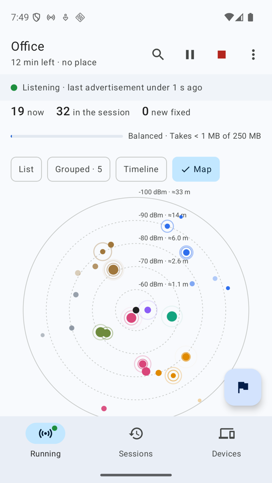

Cómo encontrar unos auriculares Bluetooth perdidos con un móvil Android
Se te han caído los auriculares en casa, en el coche o entre los cojines del sofá. Están cerca, pero no los ves. Si todavía tienen batería, es muy probable que sigan emitiendo por Bluetooth, y el móvil puede oírlos. Con la intensidad de esa señal puedes saber si te acercas o te alejas.
Antes de nada: prueba lo oficial
- AirPods: la app Buscar de Apple, en un iPhone o en icloud.com/find, los hace sonar y muestra dónde se oyeron por última vez.
- Auriculares Android con Find Hub (antes Encontrar mi dispositivo), como muchos Pixel Buds y Galaxy Buds: en la app Find Hub puedes hacerlos sonar.
- Galaxy Buds: también desde SmartThings Find.
- Si la app del fabricante tiene «buscar auriculares», úsala primero: hacerlos sonar es lo más rápido.
Si nada de eso funciona, o tus auriculares no tienen esa opción, sigue leyendo.
Cuándo funciona y cuándo no
Funciona si los auriculares están encendidos y emitiendo. En la práctica:
- Sí suele funcionar: auriculares fuera de la funda y con batería, o la funda abierta. Muchos modelos anuncian su presencia cada pocos segundos cuando no están conectados a ningún móvil.
- Mejor desconectarlos: si siguen conectados a tu móvil, algunos dejan de anunciarse. Desactiva el Bluetooth de ese móvil un momento o busca desde otro.
- No funciona: sin batería, o dentro de la funda cerrada en muchos modelos. Ahí no queda nada que oír.
Paso a paso con Observador BLE
- Empieza una sesión desde la pantalla principal. Con la versión gratuita dura hasta 30 minutos, de sobra para esto.
- Busca por el nombre: escribe una parte, como «Buds», «AirPods», «WH-» o la marca. Si no anuncian nombre, prueba con el fabricante (Apple, Samsung, Sony…).
- Abre el mapa en directo. El móvil está en el centro, y cada punto se coloca según la fuerza de su señal: cuanto más cerca del centro, más fuerte. Toca el punto de tus auriculares y verás algo como «unos −70 dBm · unos 4 m».
- Muévete despacio y mira cómo cambia. Los dBm son negativos: −50 es más fuerte que −80. Si el número sube hacia −50, vas bien; si baja, das la vuelta. Para unos segundos en cada sitio, porque la señal fluctúa.
- Cuando ronde −45 o −40 dBm, estás prácticamente encima. Mira debajo de los cojines, en los bolsillos de las chaquetas y entre los asientos.

Los metros son orientativos. Un cuerpo, una pared o un sofá restan bastante señal. Fíjate en si sube o baja, no en el número exacto.
Trucos
- Baja el móvil a la altura del suelo o del sofá. La señal cambia mucho con la altura.
- Si hay muchos aparatos parecidos, como en una oficina llena de AirPods, quédate con el que cambia cuando te mueves tú. Los demás no reaccionan a tus pasos.
- Ojo con las direcciones que cambian: muchos auriculares cambian de dirección cada pocos minutos. La app intenta unir las direcciones del mismo aparato y lo indica, pero si el punto desaparece, búscalo otra vez por el nombre.
Lo que no puede hacer
No encuentra auriculares apagados ni lejos: el Bluetooth llega a unas decenas de metros como mucho, menos con paredes. Tampoco hace sonar nada. Solo escucha.
Observador BLE es gratis en Google Play (Android 13 o posterior; en la UE, Estados Unidos, Reino Unido, Canadá y Australia), con un Pro de pago único para sesiones largas y exportaciones.